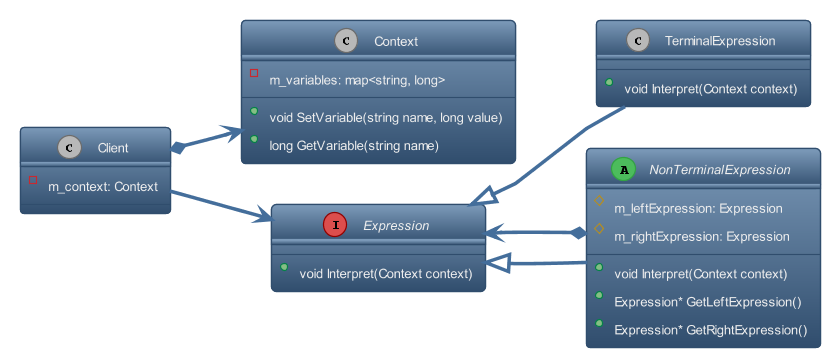
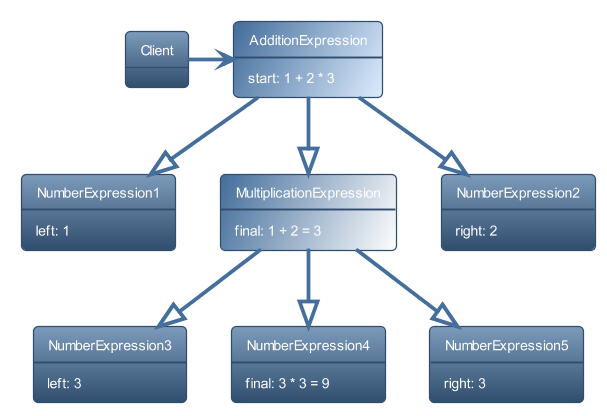

En génie logiciel, le patron de conception interpréteur est un patron de conception qui spécifie comment évaluer des phrases dans un langage.
L'idée de base est d'avoir une classe pour chaque symbole (terminal ou non terminal) dans un langage informatique spécialisé.
L'arbre syntaxique d'une phrase dans le langage est une instance du modèle composite et est utilisé pour évaluer/interpréter la phrase pour un client.
Introduction
Le patron de conception Interpreter est l'un des vingt-trois patron de conception GoF bien connus qui décrivent comment résoudre des problèmes de conception récurrents pour concevoir des logiciels orientés objet flexibles et réutilisables, c'est-à-dire des objets plus faciles à mettre en œuvre, à modifier, tester et réutiliser.
Quels problèmes le design pattern Interpreter peut-il résoudre ?
- Analyser/parser une chaîne algébrique. C'est un cas assez évident où le logiciel doit exécuter des opérations en fonction d'une équation (dessiner la courbe d'une fonction par exemple).
- lorsque le logiciel doit produire différents types de données comme résultat. Ce cas est moins évident, mais l'interpréteur y est très utile. Prenez l'exemple d'un logiciel capable d'afficher des données dans n'importe quel ordre, en les triant ou pas, etc.
Une grammaire pour le langage doit être définie afin que les phrases de la langue puissent être interprétées.
Lorsqu'un problème survient très souvent, il peut être envisagé de le représenter sous la forme d'une phrase dans un langage simple ( Domain Specific Languages ) afin qu'un interpréteur puisse résoudre le problème en interprétant la phrase.
Par exemple, lorsque de nombreuses expressions de recherche différentes ou complexes doivent être spécifiées. Leur implémentation (câblage matériel) directement dans une classe est inflexible car elle engage la classe dans des expressions particulières et rend impossible la spécification de nouvelles expressions ou la modification d'expressions existantes indépendamment (sans avoir à modifier) la classe.
Quelle solution le modèle de conception Interpreter décrit-il ?
- Définir une grammaire pour un langage en définissant une Expression hiérarchie de classes et en implémentant une opération interpret().
- Représenter une phrase dans le langage par un arbre de syntaxe abstraite (AST) composé instances d'Expression.
- Interpréter une phrase en faisant appel à
interpret() de l'AST.
Les objets d'expression sont composés de manière récursive dans une structure composite/arborescente appelée arbre de syntaxe abstraite (voir Modèle composite ).
Le patron de conception Interpreter ne décrit pas comment construire un arbre de syntaxe abstraite. Cela peut être fait manuellement par un client ou automatiquement par un analyseur.
Diagramme
Patron de conception Interpreter

Dans le diagramme de classes UML ci-dessus:
- La classe Client fait référence à l'interface commune Expression pour interpréter une expression.
- La classe TerminalExpression n'a pas d'enfants et interprète directement une expression.
- La classe NonTerminalExpression maintient un conteneur d'expressions enfants et transmet les requêtes d' interprétation à ces derniers expressions.
Arbre de syntaxe abstraite

Dans le Diagramme de collaboration d'objet UML ci-dessus:
Les objets montre les interactions d'exécution :
Exemple
BNF
L'exemple de formulaire Backus-Naur suivant illustre le modèle d'interprétation.
La grammaire:
expression ::= plus | moins | variable | nombre
plus ::= expression expression '+'
moins ::= expression expression '-'
variable ::= 'a' | 'b' | 'c' | ... |
chiffre 'z' = '0' | '1' | ... | '9'
nombre ::= chiffre | nombre Digital
définit une langue qui contient des expressions de notation polonaise inversée telles que :
En suivant le modèle de l'interpréteur, nous devons implémenter l'interface Expression pour chaque règle de grammaire.
Java
L'exemple Java suivant montre comment interpréter un langage spécialisé, tel que les expressions en notation polonaise inversée. Dans ce langage, on donne les opérandes avant l'opérateur.
import java.util.*;
{
public void interpret(Stack<Integer> s);
}
class TerminalExpression_Number
implements Expression
{
private int number;
public TerminalExpression_Number(int number)
{ this.number = number; }
public void interpret(Stack<Integer> s)
{ s.push(number); }
}
class NonTerminalExpression_Plus
implements Expression
{
public void interpret(Stack<Integer> s)
{ s.push( s.pop() + s.pop() ); }
}
class NonTerminalExpression_Minus
implements Expression
{
public void interpret(Stack<Integer> s)
{ s.push( - s.pop() + s.pop() ); }
}
{
private ArrayList<Expression> parseTree =
new ArrayList<Expression>();
Expression plus =
new NonTerminalExpression_Plus();
Expression minus =
new NonTerminalExpression_Minus();
for (String token : s.split(" ")) {
if (token.equals("+"))
parseTree.add(plus);
else if (token.equals("-"))
parseTree.add(minus);
else
parseTree.add(new TerminalExpression_Number(Integer.parseInt(token)));
}
}
public int evaluate()
{
Stack<Integer> context = new Stack<Integer>();
for (
Expression e : parseTree) e.interpret(context);
return context.pop();
}
}
{
public static void main(String[] args)
{
String expression = args[0];
System.out.println("'" + expression +"' equals " + p.evaluate());
}
}
Definition: Expression.h:19
Definition: Interpreter.h:24
Ce programme affiche :
Références
 1.9.2
1.9.2